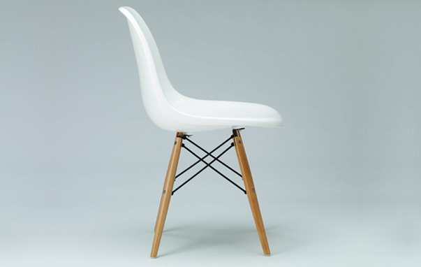

Category: Furniture
Last Modify: 01 november 2024
With a grand sense of adventure, Charles and Ray Eames turned their curiosity and boundless enthusiasm into careers that established them as a truly great husband and wife design team. Their unique synergy led to a whole new look in furniture, clean and modern. Playful and functional. Sleek, sophisticated and beautifully simple. That was and is the "Eames look".
That look and their relationship with Herman Miller started with moulded plywood chairs in the late 1940s and includes the world-renowned Eames lounge chair, now in the permanent collection at the Museum of Modern Art in New York.
Charles and Ray achieved their monumental success by approaching each project the same way: Does it interest and intrigue us? Can we make it better? Will we have "serious fun" doing it?
“Choose your corner, pick away at it carefully, intensely, & to the best of your ability, &They loved their work, which was a combination of art and science, design and architecture, process and product, style and function. "The details are not details," Charles said. "They make the product."
A problem-solver who encouraged experimentation among his staff, Charles once said his dream was "to have people working on useless projects. These have the germ of new concepts."
Their own concepts evolved over time, not overnight. As Charles noted about the development of the Moulded Plywood Chairs, "Yes, it was a flash of inspiration," he said, "a kind of 30-year flash."
With these two, one thing always seemed to lead to another. Their revolutionary work in moulded plywood led to their breakthrough work in moulded fibreglass seating. A magazine contest led to their highly innovative "Case Study" house. Their love of photography led to film making, including a huge seven-screen presentation at the Moscow World's Fair in 1959, in a dome designed by their friend and colleague, Buckminster Fuller.
Graphic design led to showroom design, toy collecting to toy inventing. And a wooden plank contraption for taking naps, rigged by their friend, director Billy Wilder, led to their acclaimed chaise lounge design.
A design critic once said that this extraordinary couple "just wanted to make the world a better place." That they did. They also made it a lot more interesting.